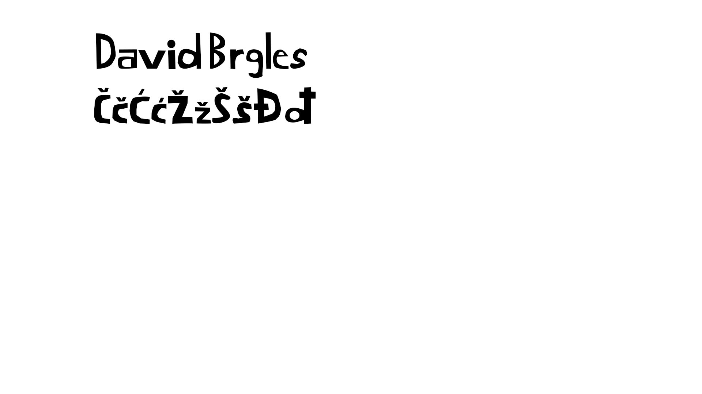

2.Vježba
U ovoj vježbi smo crtali krivulje i stavili ih unutar naših inicijala

Kreiranje fonta našeg imena i prezimena i hrvatskih slovnih znakova
U ovoj vježbi smo crtali krivulje i stavili ih unutar naših inicijala
Preko slike pravog cvijeta crtali smo latice te smo ih rotirali. Stabljiku smo sami nacrtali

Pomoću liearnog i radijalnog gradijenta smo obojali ovaj rad, i koristili smo transparenciju

U ovom projektnom zadatku smo ukomponirali sve elemente iz prijašnih vježbi

Preko Photoshopa smo uredili ovu sliku tako da smo micali pjege sa njenog tijela, stamp tool itd.

Uređivali smo slike pomoću layer maska tako što bi zasebni dio slike farbali u drugu boju. Koristili smo brush tool i eraser tool.

Koristili smo fotomontažu tj. izrezivali smo iz drugi slika i lijepili na galvnu sliku.

Sve vježbe u photoshopu smo morali ukomponirati u ovaj projektni zadatak. Korsitili smo sjene, izrezivanje, layer mask itd.

U ovoj vježbi radili smo gif, koji sam uređivao u Shotcutu i photoshopu.

Uređivao sam preko Shotcuta ovaj video. Stavio sam dva videa u jedan te sam dodao razne efekte na njih.
Ova vježba je bila bazirana na izradi web stranice kodiranjem(HTML I CSS). Vježbu sam radio preko Notepada ++.
Vježba se trebala sastojat od 3 linka na kojoj su početna neka web lokacija, video i zvuk tj. html dokument i pdf dokument